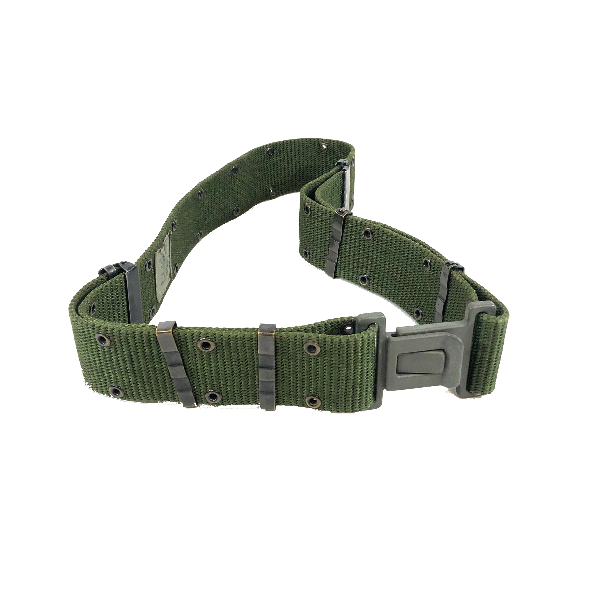
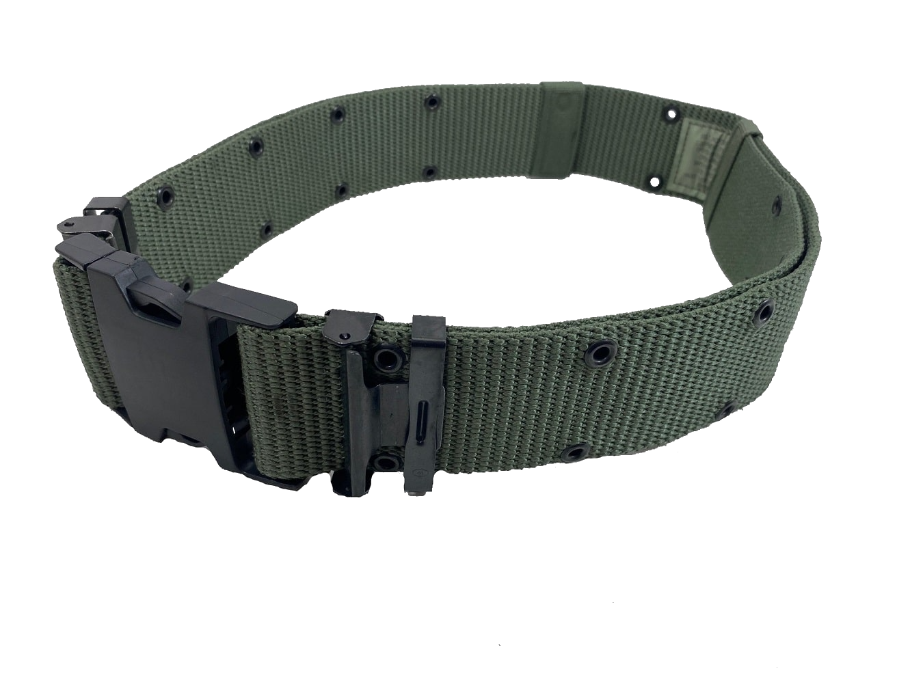

While alice is versatile, there is only one item where your size becomes an issue, and that is where the belt comes in. The Belt or pistol belt or equipment belt is the heart of the ALICE system, and because of that the belt is the first piece of equipment you should find, but here is where things get tricky, theres a lot of "alice belts" being sold, but which ones are genuine and therefore good quality? Any Belt that has one of the three buckles mentioned below, with an OD Green color, and an actual NSN tag on the inside of the belt itself(usually on LC-2 and LC-3 belts) is a good belt. Now some NSN or National Stock Number tags were either removed or fell off or are faded so don't panic, most belts have a US stamped in black. if the stamping is gone but the belt still has one of the buckles and is of a nylon construction, its likely still an original belt, and evidence of the US stamp or sewn in square of the NSN tag can remain, so inspect each belt closely if possible. Any Tan, Black, camoflage printed, or any other colored belt is an aftermarket and should be used at your own risk as quality is hit or miss compared to legitimate alice belts. Also look to see if there are two or three rows of holes called grommets, alice only has two rows, one on top, one on bottom. If it is three rows its likely an older belt from the previous systems, which will still work but are not offically in the alice family. These grommets allow the attachment of M1910 pattern hangers such as the older style of bayonet scabbard
Belt sizes
Before deciding on variant, you need a size, luckily there are only two Medium and Large. Medium is for 30 inches waist and smaller, and large is for over 30 inches waist. There are no size small belts! Every other piece of ALICE is one size fits all! Ultimately it is up to you which one to go for but I'd go for the LC-3, as its the most advanced of the three, and because the belt is the heart of the alice system, its the one piece of kit aside from the suspenders, you really don't want to skimp out on, because if the belt fails, the system will not really work well if at all. I have never had this problem with the LC-3 belts but I have seen it happen with LC-2 belts purely because of how much they were used.
LC-1 first generation circa 1970's

This is the first generation belt, using the same bucle as the M1956 and M1967 belts, which is a carry over from other designs from before the First World War. While its okay and definitely durable, its not the best and is more of a collectors item. This belt is the only non plastic buckle for a belt availible, the material is brass hence the gold color seen in worn examples as the black finish has worn off. The only drawback is that the buckle is that its by no means a quick release so if you need to get out of your gear quickly in an emergency, such as an impact to a magazine causing the ammuniton to cook off this may prove slightly difficult. However, if you are a re enactor, this makes an excellent choice for a vietnam era kit build as these were issued in the very late stages of the war.
LC-2 second generation circa 1980's
When you look up an Alice belt, this will probably be one of the two you see. Designed to be a quick release mechanism to fix in the event you need to get your gear off quickly but also make it more secure and prevent unbuckling when in the prone position. Both are drawbacks identified with the first generation belts. Its personally not my favorite as the plastic used is a little on the brittle side due to age, but it will work if you find one in good to new condition. This was the belt issued during the 1991 Gulf War, and the Panama Invasion. it was still used to some extent into the late 1990's as they were slowly phased out in favor of better designs. I wouldn't use one unless you get one in brand new condition, NOS (New Old Stock), or barely used condition as these were ran hard for over 20 years. These are good if you find one in good shape but most if not all on the market are well used over decades of service and its tricky to find any in good condition at least this has been my own experience, situations vary from place to place.
LC-3 Modernized Pistol Belt circa 1990's and turn of the millenium
This is the other belt you see when you look up an alice belt. Often called the "bianchi belt" because some claim it was developed by Bianchi. It was intended to replace both LC-1 and LC-2 belts mentioned previously as part of the Individual Integrated Fighting System or IIFS where the LBV-88E vest came from. The only changes made were the belt buckle was replaced with an ITW Fastex buckle, which basically is what you think of when you think of a plastic buckle, which is in my opinion the best one availible and an improved size adjustment system. The Fastex buckle is also prominently featured on the LBV-88E vests and are still one of the most durable buckles on the market today. While the IIFS never fully replaced ALICE system as intended, and both were replaced with MOLLE/PALS, this is still the best option for any practical use and was one of the last official changes to the ALICE system before it was retired and surplused to the civilian market making it readily availible and as tons of it never saw combat, they're in great shape! It should be noted that this belt may often be sold as an LC-2 but many use LC-3 to distingush the two.